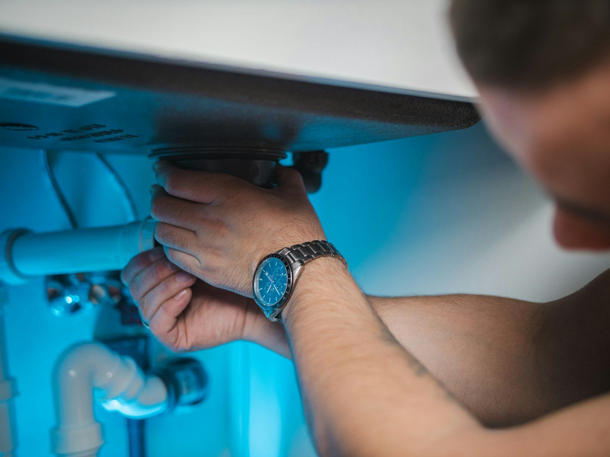

What separates a water heater emergency from an ordinary repair? Usually it is one of four things: active flooding, a discharging relief valve, dangerously hot water, or a gas odor. Flooding is the one that catches people off guard. A failed tank is still connected to the cold supply, so it keeps refilling and leaking long after its own contents are gone, and the damage spreads into finished floors and lower rooms quickly. A T&P valve that keeps releasing water or steam is the heater signaling a safety limit has been exceeded. Scalding water points to a runaway thermostat or gas control. A gas smell is its own category and has its own first steps, covered below. Across Louisville, KY, we move each of these to the front of the line.
Safety comes before the phone call to us. If you smell gas, get everyone outside immediately, do not flip light switches or unplug anything on the way out, and call your gas utility or 911 from outside. Once gas is ruled out, close the cold-water shutoff on the line feeding the heater; if it is seized or hard to reach, shut the main water valve for the house. On a gas unit, set the gas control to OFF. On an electric unit, switch off its breaker, and never touch the panel while standing in water. If the relief valve is discharging, do not cap it or plug the discharge pipe, because that valve is the only thing keeping an overheated tank from failing violently. Then call (502) 205-4594 and our team will pick it up from there.
The first thing we do is listen. When you call (502) 205-4594, we help you confirm the water and energy are off, suggest what to move out of the water's path, and dispatch a technician as fast as the day allows, with a straight answer about timing. On arrival, the priorities are safety, diagnosis, and a clear explanation. Worn relief valves, weeping drain valves, rotted dielectric fittings, dead thermocouples, and failed elements are the usual culprits, and we stock them so the fix rarely waits on an order. A tank that has corroded through is the exception, since nothing short of a new heater solves it, and we lay out those options honestly. Keep (502) 205-4594 handy so you have it before you need it in Louisville.
Our most requested service is Water Heater Repair in Louisville. Start there if you're not sure what you need.

Signs You Need Emergency Water Heater Repair in Louisville
Catching a symptom early is often the difference between a quick part swap and a tank that gives out on the garage floor. Here are the most common indicators that it's time to call a professional:
- Standing water around the water heater that returns after you wipe it up
- Signs of scorching or backdrafting around the base or top of a gas heater
- A complete loss of hot water throughout the house
- Loud popping, banging, or rumbling from the tank that has gotten worse quickly
- Hot water far hotter than normal, a sign of a runaway thermostat or gas control
- The relief valve on the side of the tank dripping, hissing, or discharging
- A rotten-egg smell near a gas water heater (leave first, and call the gas utility)
- An electric water heater that keeps tripping its circuit breaker
Act Before It Gets Worse
Most water heater failures start small: a popping sound from sediment, a damp spot under the drain valve, or a shower that goes lukewarm a few minutes sooner each week. Call Louisville Water Heater at (502) 205-4594 at the first sign of trouble.
Need Help With Emergency Water Heater Repair?
Our experienced technicians are standing by to help.
Tap to Call (502) 205-4594Emergency Water Heater Repair FAQ
Why Hire a Professional for Emergency Water Heater Repair?
A water heater emergency stacks several hazards in one small space. There is water on the floor near a 240-volt circuit on electric models, or near a gas valve, burner, and flue on gas units. There is a tank holding water at high temperature and household pressure. And there is a safety valve that, if it is discharging, has a reason for it. Homeowners sometimes try to stop the relief valve by capping it, crank on a leaking fitting until it snaps, or relight a pilot beside a gas smell, and each of those can turn a bad afternoon into a real disaster. The safest moves for a homeowner are the simple ones: leave for gas, then shut off water and energy, then call for help.
A trained technician brings the right order of operations and a truck full of the likely parts. Our team confirms the heater is isolated, tests for gas leaks with a detector and soap solution instead of relying on a sniff test, checks household water pressure and thermal expansion when a relief valve has been discharging, and inspects the vent for proper draft before a gas unit is restarted. Equally important, we tell you honestly when a heater can be repaired and when it cannot. A leaking seam or rusted-through bottom cannot be fixed, while a failed valve, fitting, or element usually can, and the difference is often a few hundred dollars versus a new heater. You get that answer before any work begins.
Step by Step: How a Visit Works
Our workflow is simple and thorough, so nothing gets missed between the fuel supply and the relief line. Here's a look at each step our team takes:
Make It Safe by Phone
On the call, we check for any gas odor first, then guide you to the cold-water valve and the heater's gas control or breaker so the damage stops growing while help is on the way.
Arrival & Stabilization
You get a straight answer on timing, not a promise we cannot keep. Once on site, we check the shutoffs, the gas or electrical supply, and the vent before touching the heater itself.
Find the Failure, Fix It
If a component failed, we swap it on the spot. If the tank itself is leaking, we show you why a patch will not hold and walk you through replacement options and pricing.
Safe Restart
We refill the tank, purge air from the lines, restart the heater, check every joint for leaks, confirm the relief valve seats, and set the temperature to a safe 120F.
Not Sure What You Need?
Tell us the age, fuel type, and symptoms, and we'll help you sort out the next step.
Call (502) 205-4594 NowHow to Prevent Water Heater Problems
A few preventive steps can help you avoid a cold shower or a wet floor down the road. Start with these practical measures our team relies on:
- Annual flushing keeps sediment from causing the rumbling and hot spots that lead to leaks
- Leave clear space around a gas heater and never store flammable liquids nearby
- A simple water sensor on the floor beside the tank can warn you hours earlier
- Lift the relief valve lever once a year to confirm it opens and reseats, and call if it keeps dripping
- Set the temperature around 120F, which protects against burns and slows tank wear
- Know where the heater shutoff and the main water valve are, and make sure everyone in the house does too
- Put the heater in a drain pan piped to a floor drain or the exterior where the setup allows
Comparing DIY and Professional Work
The line between a safe DIY check and a risky repair is usually the moment you need to open a gas fitting, a vent connection, or an electrical cover. Here's how the two approaches stack up:
| Factor | Doing It Yourself | Professional Service |
|---|---|---|
| Gas Safety | Risk of ignition while investigating | Evacuate, utility clears it, then leak testing |
| Stopping the Leak | Seized valves forced until they break | Water stopped and drain-down done properly |
| T&P Discharge | Valve ignored or blocked off | Pressure and expansion checked, valve replaced if worn |
| Electrical Hazard | Handling 240V near standing water | Breaker isolated and wiring checked first |
| Diagnosis | Replacing parts until the leak stops | Exact source traced before parts are swapped |
| Outcome | Fix that may not hold overnight | Hot water back and connections proven dry |
Let's Get Your Hot Water Back
The sooner you call, the sooner the hot water is back. Reach Louisville Water Heater for fast service.
Tap to Call (502) 205-4594Areas We Serve for Emergency Water Heater Repair
We serve Louisville and its neighboring towns for emergency water heater repair, from quick same-day repairs to planned installs.